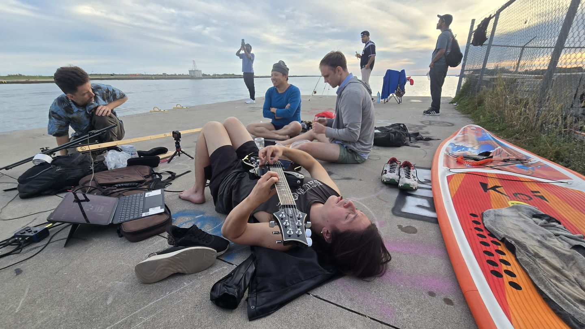
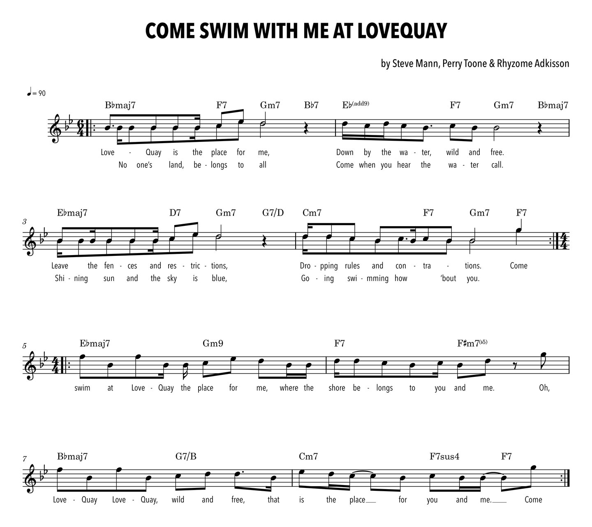

Anthem
Come Swim With Me at LoveQuay
Anthem of the LoveQuay Republic, by Steve Mann, Perry Toone and Rhyzome Adkisson. Words finished 20 November 2026.
This page is not linked from anywhere
It sits at /anthem.html and nothing points at it. It also
carries a noindex tag, so search engines will leave it alone until that
line comes out of the page head.
Listen
Electric piano, one minute twenty.
A reference track, not a recording — the chart played through on an electric piano so you can hear where the tune goes.
B♭ major. The verse is in 6/4 at 90 to the quarter and the chorus switches to 4/4, each half marked to repeat.
This was played from the earlier chart. The tune is unchanged — same key, tempo, metre, changes and notes — but it predates the final words, so the singing on it is not what is printed below.
Come Swim With Me at LoveQuay · electric piano
1:23 · 128 kbps · 1.3 MB · download
Score
Melody, words and changes.
Four bars of verse in 6/4, four of chorus in 4/4, each half repeated. Both verses are printed under the same notes.
The verse runs B♭maj7 – F7 – Gm7 – B♭7 – E♭(add9) – F7 – Gm7 – B♭maj7, then E♭maj7 – D7 – Gm7 – G7/D – Cm7 – F7 – Gm7 – F7. The chorus lifts to E♭maj7 – Gm9 – F7 – F♯m7(♭5) before settling through B♭maj7 – G7/B – Cm7 – F7sus4 – F7.
The MusicXML is the song as data rather than as a picture. Open it in MuseScore, Dorico, Sibelius, Finale or Logic to play it, transpose it, or arrange it for whatever you have to hand.

Words
The finished lyric.
As set. The two verses are sung to the same four bars, one after the other, and each ends on Come — the pickup that carries you into the chorus.
Verse 1
LoveQuay is the place for me,
Down by the water, wild and free.
Leave the fences and restrictions,
Dropping rules and contradictions. Come…
Verse 2
No one's land, belongs to all,
Come when you hear the water call.
Shining sun and the sky is blue,
Going swimming how 'bout you. Come…
Chorus
Come swim at LoveQuay the place for me,
Where the shore belongs to you and me.
Oh, LoveQuay, LoveQuay, wild and free,
That is the place for you and me. Come…
One syllable is missing from the printed score
Bar 4 sets the word as con – tra – – tions.
It is contradictions — it rhymes with restrictions, and the
earlier chart spelled it out in full. The missing dic is in the MusicXML as well
as the print, so it is the notation that has lost a syllable rather than the engraving
that has mislaid one. The words above are printed as sung, so this page and the score
disagree until that is fixed.
Finalised
What the final pass changed.
The music did not move a note. The words, the title and the shape of the thing did.
- The title gained a word. Come Swim With Me at LoveQuay. The pickup that hands the verse to the chorus is now the name of the song.
- Verse 2 is set. It never needed its own music — it shares the verse's four bars with verse 1 and is printed as a second line of lyrics under the same notes.
- The chorus lost the open sea. It used to run “where the city meets the open sea”. It now runs “where the shore belongs to you and me”. That retires the note this page used to carry: nothing in the song claims salt water any more, and the water is still Lake Ontario.
- “Love key” is gone. The old chart spelled the chorus phonetically for whoever was singing it. The score now sets it as Love‑Quay.
- The bridge was cut, along with the longer second verse that went with it.
- The D.C. al Fine is gone, replaced by a repeat mark on each half.
Not in the song
Cut along the way.
Written, set aside, and kept here so it is not lost. None of this is part of the anthem.
Second verse, earlier draft
Concrete towers, cranes and gates,
Another sign that says to wait.
But down the quay the water glows,
And everybody knows where to go.
No fancy clubs, no entrance fee,
Just open skies and community.
A little ladder, a great big view,
A place for me, a place for you.
Bridge
Nobody's job, everybody's place,
Cold lake water upon my face.
We care for the shore, we keep it clean,
The loveliest place I've ever seen.